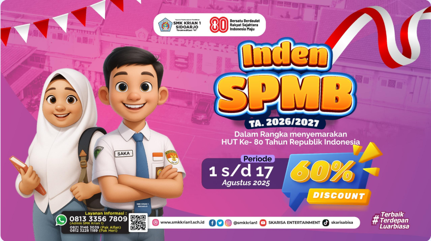
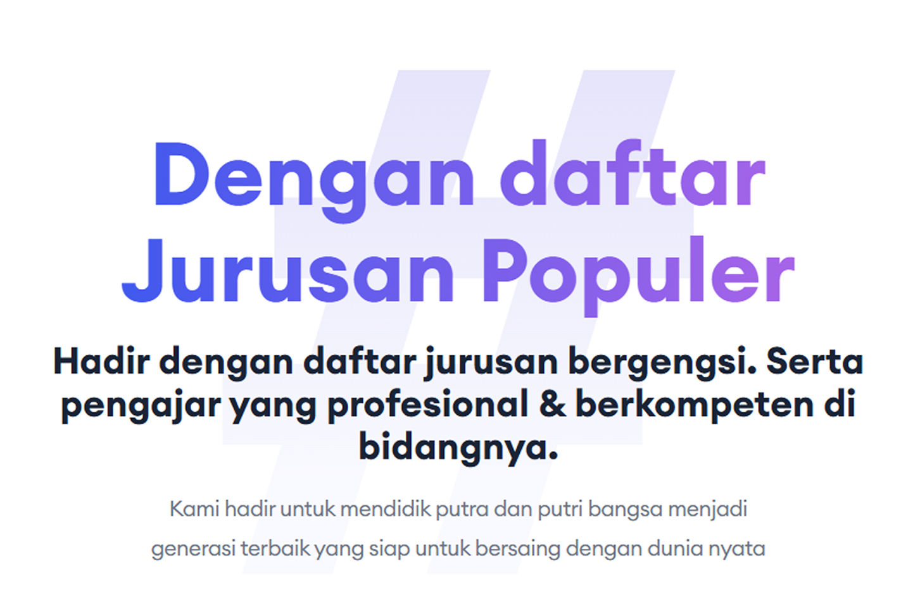
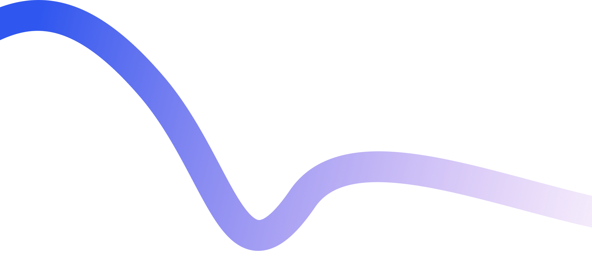
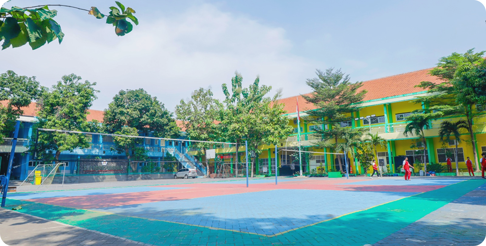

2,501+
Siswa Aktif

5+
Jurusan & Ekstra Kulikuler

Dini Mekarsari S.Pd M.Pd
Kepala Sekolah SMK Krian 1 Sidoarjo
.png)
520+
Peraih Prestasi

25,000+
Alumni Berkompetensi



.png)
Teknik Permesinan
.png)
Teknik Instalasi Tenaga Listrik
.png)
Rekayasa Perangkat Lunak
.png)
Teknik Pengelasan
.png)
Teknik Logistik
Guru Inspirasi
.png)
Rusmini S.Kom M.Kom
Kepala Jurusan RPL
.png)
.png)
.png)
.png)
.png)
Profile Sekolah

.png)

▶
Pertanyaan Yang Sering Ditanyakan
01
Apa keunggulan atau prestasi unggulan dari SMK Krian 1?
+
SMK Krian 1 dikenal aktif dalam berbagai lomba kejuruan seperti LKS,
serta memiliki alumni yang bekerja di perusahaan besar maupun melanjutkan
ke perguruan tinggi ternama.
02
Bagaimana cara menghubungi pihak sekolah?
+
Anda dapat menghubungi pihak sekolah melalui nomor telepon resmi,
email, atau datang langsung ke kantor tata usaha di jam kerja.
03
Apa saja kegiatan ekstrakurikuler yang tersedia?
+
Terdapat berbagai kegiatan ekstrakurikuler seperti Pramuka, Paskibra,
Olahraga, Musik, Jurnalistik, dan lain-lain untuk mengembangkan minat
serta bakat siswa.
04
Bagaimana cara mendaftar ke SMK Krian 1 Sidoarjo?
+
Pendaftaran dilakukan secara online melalui website resmi sekolah atau
datang langsung ke sekolah sesuai jadwal penerimaan siswa baru.
05
Bagaimana fasilitas yang tersedia di sekolah?
+
Sekolah memiliki ruang kelas ber-AC, laboratorium lengkap, ruang praktik
kejuruan modern, perpustakaan, serta lapangan olahraga yang memadai.
Apa Kata Alumni
Lihat Bagaimana Testimoni Alumni Smk Krian 1 Yang Sekarang Lulus Dan Sudah Bekerja Atau Berkuliah

Sapa Jarwo Udin
Teknik Logistik
“Selamat atas kerja keras dan dedikasi Anda!”
Sukinanda
Rekayasa Perangkat Lunak
“Hasilnya luar biasa dan sangat menginspirasi.”
Rofik Alam
Teknik Permesinan
“Perjuanganmu membuahkan hasil terbaik.”
Sapa Jarwo Udin
Teknik Logistik
“Selamat atas kerja keras dan dedikasi Anda!”Udayana
Teknik Permesinan
“Konsistensi adalah kunci keberhasilan.”Joko Anwar
Teknik Listrik
“Hasil luar biasa dan menginspirasi banyak orang.”Bambang Sutjep
RPL
“Kerja kerasmu menjadi teladan.”Udayana
Teknik Permesinan
“Konsistensi adalah kunci keberhasilan.”